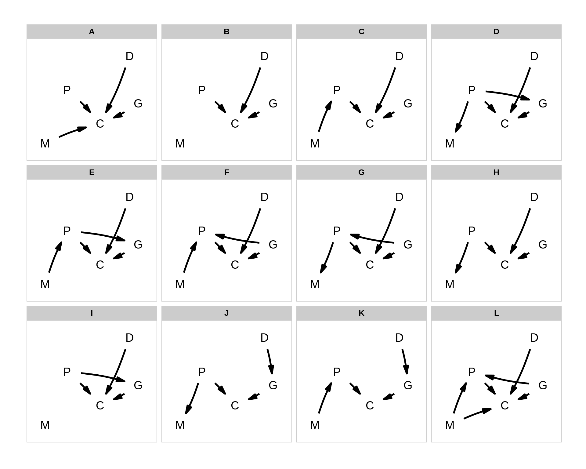
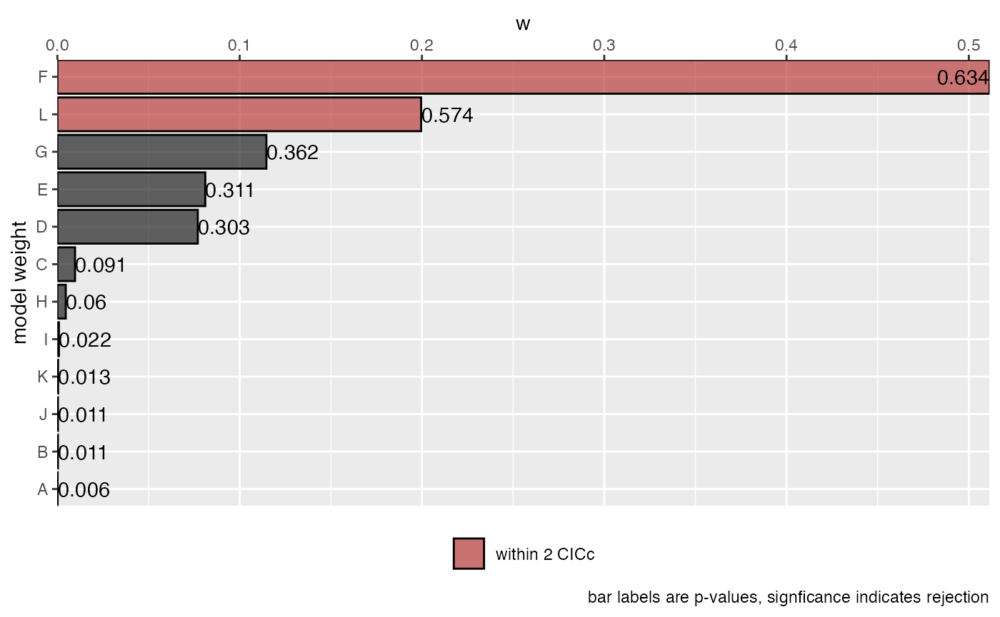
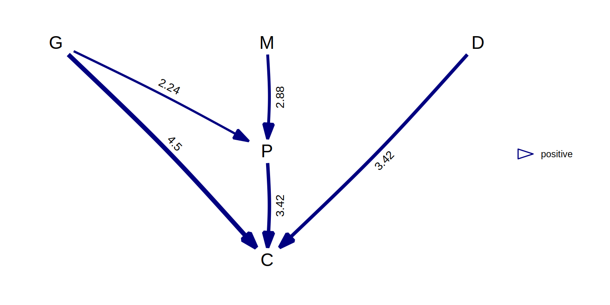

Comparing causal models of binary traits using phylopath
Wouter van der Bijl
2021-10-04
Source:vignettes/binary_models.Rmd
binary_models.RmdIntroduction
This vignette gives a short example of how PPA can be applied to binary data sets using phylopath. A longer example with more explanation of the code can be found in the other vignette, “intro to phylopath”.
Important note:
There has been some discussion concerning how to best perform logistic regression with phylogenetic correction. I take no position on this matter. This package uses phylolm::phyloglm, written by Lam Si Tung Ho, Robert Lachlan, Rachel Feldman and Cécile Ané. phylopath’s accuracy is directly dependent on the accuracy of that function, and if you don’t trust phyloglm you should not trust binary models used in phylo_path.
If you have useful opinions or information on this point, feel free to contact me.
Example analysis
Data and hypotheses
This recreates the analysis from the following paper:
Dey CJ, O’Connor CM, Wilkinson H, Shultz S, Balshine S & Fitzpatrick JL. 2017. Direct benefits and evolutionary transitions to complex societies. Nature Ecology & Evolution. 0137.
This is, to my knowledge, the first study to employ PPA on binary traits.
The study investigates the evolution of cooperative breeding in cichlids. In short (my summary), there has been intense debate about what factors drive species towards evolving systems of cooperative breeding. Many have argued (and provided evidence in birds and mammals) that cooperative breeding chiefly evolves from monogamous mating systems because helpers can gain indirect fitness benefits through kin selection. However, a non-exclusive alternative hypothesis is that direct benefits due to ecological factors may be important and provide direct benefits. Therefore, both hypotheses should be considered at the same time.
The data is included in this paper as cichlids and cichlids_tree
It contains five variables:
- C: Cooperative breeding, cooperative or non-cooperative.
- M: Mating system, monogamous or non-monogamous.
- P: Parental care, maternal or biparental.
- G: Social grouping, grouping or non-grouping.
- D: Diet, piscivore or non-piscivore.
Under the indirect fitness hypothesis, monogamy is expected to be a major driver of cooperative breeding, while group living, biparental care and diet type may be important contributors towards a direct benefits scenario.
Defining the causal models
Following the paper in question, we define 12 putative causal models.
library(phylopath)
models <- define_model_set(
A = c(C~M+D),
B = c(C~D),
C = c(C~D, P~M),
D = c(C~D, M~P, G~P),
E = c(C~D, P~M, G~P),
F = c(C~D, P~M+G),
G = c(C~D, M~P, P~G),
H = c(C~D, M~P),
I = c(C~D, M~M, G~P),
J = c(M~P, G~D),
K = c(P~M, G~D),
L = c(C~M+D, P~M+G),
.common = c(C~P+G)
)
plot_model_set(models, algorithm = 'kk')
Comparing the models
Now that we have our models, data and a tree, we can compare the models using phylo_path
(cichlids_results <- phylo_path(models, cichlids, cichlids_tree))## 15 rows were dropped because they contained NA values.## Pruned tree to drop species not included in dat.## Warning in phylo_path(models, cichlids, cichlids_tree): Some models produced
## warnings. Use `show_warnings()` to view them.## A phylogenetic path analysis, on the variables:
## Continuous:
## Binary: G P D M C
##
## Evaluated for these models: A B C D E F G H I J K L
##
## Containing 67 phylogenetic regressions, of which 22 uniqueNote that two messages are printed. This is because there are missing values in our data set that are first being removed. Also, since the tree includes species for which data is missing, the tree had to be pruned. This is done automatically with a message to the user. You should check whether the amount of data removed is correct.
phylo_path notes that indeed all variables are binary.
(s <- summary(cichlids_results))## model k q C p CICc delta_CICc l w
## F F 5 10 7.95 0.63385 33.1 0.00 1.000000 0.511539
## L L 4 11 6.66 0.57358 34.9 1.88 0.390236 0.199621
## G G 5 10 10.94 0.36231 36.1 2.99 0.224235 0.114705
## E E 5 10 11.63 0.31052 36.7 3.68 0.158648 0.081154
## D D 5 10 11.73 0.30322 36.9 3.79 0.150632 0.077054
## C C 6 9 18.91 0.09081 41.0 7.93 0.018945 0.009691
## H H 6 9 20.53 0.05775 42.6 9.55 0.008424 0.004309
## I I 6 9 23.79 0.02170 45.9 12.82 0.001646 0.000842
## K K 6 9 25.33 0.01333 47.4 14.36 0.000763 0.000390
## J J 6 9 25.82 0.01139 47.9 14.84 0.000598 0.000306
## B B 7 8 28.97 0.01055 48.2 15.10 0.000525 0.000269
## A A 6 9 27.68 0.00616 49.8 16.71 0.000236 0.000121
plot(s)
We see that model F is the best supported model. This model notably does not include a link between monogamy and cooperative breeding, giving support to the direct benefits hypothesis.
Model L, the second best model, is exactly the same as
Evaluating variable importance
Now that we have selected F as our best model, we still have three factors that affect cooperative breeding: diet, social grouping and parental care. Which one is more important? For this we can fit the model and look at magnitude of the coefficients. In this case, since we want to use the best model we use the function best(). One can use choice() to choose any arbitrary model, or average() to average over several models.
best_cichlids <- best(cichlids_results)To see the individual coefficients and their standard errors, simply print best_cichlids:
best_cichlids## $coef
## G M P D C
## G 0 0 2.244975 0 4.499944
## M 0 0 2.879175 0 0.000000
## P 0 0 0.000000 0 3.415387
## D 0 0 0.000000 0 3.415661
## C 0 0 0.000000 0 0.000000
##
## $se
## G M P D C
## G 0 0 0.8132303 0 1.202999
## M 0 0 0.8602750 0 0.000000
## P 0 0 0.0000000 0 1.351865
## D 0 0 0.0000000 0 1.380511
## C 0 0 0.0000000 0 0.000000
##
## attr(,"class")
## [1] "fitted_DAG"Or plot those:
coef_plot(best_cichlids, error_bar = "se", reverse_order = TRUE) + ggplot2::coord_flip()
But we can also plot the final model:
plot(best_cichlids)
It appears that social grouping is a slightly more important than diet and biparental care.